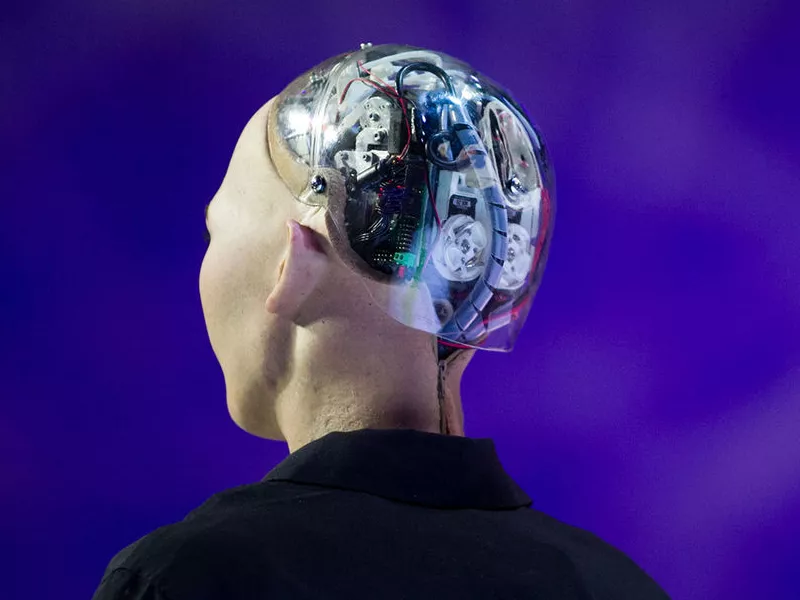

Штучний інтелект (ШІ) — це галузь інформатики, яка займається розробкою інтелектуальних машин, здатних виконувати завдання, які зазвичай потребують людського інтелекту. Системи штучного інтелекту створені для навчання на досвіді, розпізнавання закономірностей і ухвалення рішень на основі вхідних даних. Ці системи можна навчити виконувати певні завдання, наприклад, розпізнавати зображення, розуміти природну мову або грати в ігри. Технологія штучного інтелекту охоплює широкий спектр методів, включаючи машинне навчання, обробку природної мови, робототехніку, експертні системи тощо. Мета досліджень штучного інтелекту полягає в тому, щоб створити машини, які можуть міркувати, розуміти та навчатися, як люди, і використовувати ці можливості для покращення життя людства та вирішення складних проблем.
Це відносно молода галузь досліджень, започаткована 1956 року. Її історичний шлях нагадує синусоїду, кожен «зліт» якої ініціювався деякою новою ідеєю. На сьогодні її розвиток перебуває на «підйомі» і спирається на застосування вже досягнутих результатів в інших галузях науки, промисловості, бізнесі та навіть у повсякденному житті. На думку футуролога Рея Курцвейля людство досягне Сильного ШІ людського рівня у 2029 році. На думку Ілона Маска — у 2025 році. На відміну від розвитку людського інтелекту, який розвивався десятками тисяч років, Сильний ШІ зможе розвиватись майже експоненціально — за долі секунди перевершити здібності людського розуму в десятки-тисячи-мільйони разів. Момент в майбутній історії, коли ШІ перевершить людський розум називається «технологічною сингулярністю». Що буде після технологічної сингулярності неможливо передбачити, так як людство ще ніколи не мала справу з чимось набагато розумнішим і потужнішим за людський мозок.
1.Машинне навчання — це тип штучного інтелекту, який передбачає навчання алгоритмів навчанню на основі вхідних даних і покращенню їх продуктивності з часом. Існує три основних типи машинного навчання: кероване навчання, некероване навчання та навчання з підкріпленням.
2.Обробка природної мови (NLP) — це тип ШІ, який зосереджується на взаємодії між комп'ютерами та людськими мовами. Системи НЛП розроблені для розуміння та інтерпретації людської мови, і вони використовуються в таких програмах, як чат-боти, голосові помічники та машинний переклад.
3.Робототехніка — це сфера штучного інтелекту, яка зосереджена на проектуванні та розробці роботів, які можуть виконувати завдання у фізичному світі. Робототехніка передбачає інтеграцію штучного інтелекту, датчиків і механічних систем, щоб роботи могли сприймати навколишнє середовище, ухвалювати рішення та виконувати дії.
4.Експертні системи — це системи штучного інтелекту, призначені для надання порад і підтримки ухвалення рішень у певних сферах, таких як маркетинг, дизайн, медицина, право та інженерія. Експертні системи запрограмовані з набором правил і знань, які дозволяють їм міркувати та надавати рекомендації на основі конкретних умов.
Маши́нне навча́ння (МН, англ. machine learning, ML) — це узагальнювальний термін стосовно розв'язування задач, для яких розробка алгоритмів програмістами-людьми була би занадто витратною, і які натомість розв'язують, допомагаючи машинам «відкривати» свої «власні» алгоритми, без потреби явно вказувати їм, що робити, за допомогою алгоритмів, розроблених людьми. Нещодавно породжувальні штучні нейронні мережі змогли перевершити результати багатьох попередніх підходів. Підходи машинного навчання застосовували до великих мовних моделей, комп'ютерного бачення, розпізнавання мовлення, фільтрування електронної пошти, сільського господарства та медицини, де розробка алгоритмів для виконання необхідних завдань була би занадто витратною.
Термін «машинне навчання» (англ. machine learning) запровадив 1959 року Артур Семюель, працівник IBM та піонер у галузі комп'ютерних ігор та штучного інтелекту. В цей період також використовували й синонім самонавчальні комп'ютери (англ. self-teaching computers).
На початку 1960-х років компанія Raytheon розробила машину, яка могла навчитися розпізнавати різні сигнали, наприклад, гідроакустичні сигнали, електрокардіограми та зразки мовлення. Машина навчилася робити це, отримуючи від оператора інформацію про те, чи правильно вона розпізнала сигнал. Якщо машина помилилася, оператор натискав кнопку, і машина переоцінювала своє рішення. У 1960-х роках також було написано книгу про машинне навчання, яка була присвячена класифікації образів. Книга описала, як машини можуть навчитися розпізнавати різні типи образів, такі як тварини, люди та предмети. У 1970-х роках інтерес до машинного навчання продовжував зростати, особливо в галузі розпізнавання образів. У 1981 році було проведено дослідження, в якому нейронна мережа навчилася розпізнавати 40 символів, включаючи літери, цифри та спеціальні символи. Том Мітчелл, один із піонерів машинного навчання, дав визначення машинного навчання, яке використовується досі. Він сказав, що машина вчиться, якщо її продуктивність у певному завданні покращується з досвідом. Це визначення машинного навчання є операційним, тобто воно базується на тому, що машина може робити, а не на тому, як вона це робить. Це відповідає пропозиції Алана Тюрінга, який сказав, що ми можемо сказати, що машина мислить, якщо вона може робити те, що можемо робити ми.
Сучасне машинне навчання має дві мети: одна — класифікувати дані на основі розроблених моделей, інша — передбачувати майбутні результати на основі цих моделей. Гіпотетичний алгоритм для класифікування даних може використовувати бачення комп'ютером родимок у поєднанні з керованим навчанням, щоби навчити його класифікувати ракові родимки. Алгоритм машинного навчання для біржової торгівлі може інформувати трейдера про майбутні потенційні прогнози.
Контрольоване навчання
Цей метод навчання застосовується у випадках, коли є великі обсяги даних, припустимо -— тисячі фотографій домашніх тварин з маркерами (мітками, ярликами): це кішка, а це собака. Необхідно створити алгоритм, за допомогою якого машина могла б по фотографії, яку «не бачила» раніше, визначити, хто на ній зображений: кішка або собака. У ролі «вчителя» в даному випадку виступає людина, яка заздалегідь проставила маркери. Машина сама вибирає ознаки, за якими вона відрізняє кішок від собак. Тому в подальшому знайдений нею алгоритм може бути швидко переналаштований на рішення іншої задачі, наприклад, на розпізнавання курей і качок. Машина знову-таки сама виконає складну і копітку роботу по виділенню ознак, за якими буде розрізняти цих птахів. А нейромережа, яку навчили розпізнавати кішок, можна швидко навчити обробляти результати комп'ютерної томографії.
Неконтрольоване навчання
Хоча маркованих, розмічених даних накопичилося вже досить багато, даних без маркерів (міток) все ж набагато більше. Це зображення без підписів, аудіозаписи без коментарів, тексти без анотацій. Завдання машини при неконтрольованому навчанні — знайти зв'язку між окремими даними, виявити закономірності, підібрати шаблони, упорядкувати дані або описати їх структуру, виконати класифікацію даних. Неконтрольоване навчання використовується, наприклад, в рекомендаційних системах, коли в інтернет-магазині на основі аналізу попередніх покупок покупцеві пропонуються товари, які можуть зацікавити його з більшою ймовірністю, ніж інші. Або коли на після перегляду якогось відеокліпу на порталі YouTube відвідувачеві пропонують десятки посилань на ролики, чимось схожі на переглянутий. Або коли Google у відповідь на один і той же запит ранжує посилання в результатах пошуку для одного користувача інакше, ніж для іншого, оскільки враховує історію пошуків.
.avif)
Навчання з підкріпленням
Таке навчання є окремим випадком контрольованого навчання, але вчителем в даному випадку є «середовище». Машина (її в цій ситуації часто називають «агент») не має попередньої інформацією про середовище, але має можливість здійснювати в ній будь-які дії. Середа реагує на ці дії і тим самим надає агенту дані, які дозволяють йому реагувати на них і вчитися. Фактично агент і середовище утворюють систему зі зворотним зв'язком. Навчання з підкріпленням використовується для вирішення більш складних завдань, ніж навчання з учителем і без вчителя. Воно використовується, наприклад, в системах навігації для роботів, які навчаються уникати зіткнень з перешкодами шляхом набуття досвіду, отримуючи зворотний зв'язок при кожному зіткненні. Навчання з підкріпленням використовується також в логістиці, при складанні графіків і плануванні завдань, при навчанні машини логічним іграм (покер, нарди, го і ін.).
Нейронні мережі і глибоке навчання
У сучасному машинному навчанні використовують різноманітні технології, включаючи дискримінантний аналіз, байєсівські класифікатори та інші математичні методи. Проте на кінець XX століття виник інтерес до штучних нейронних мереж (ANN). Їх популярність значно зросла після розвитку "Методу зворотного поширення помилки" в 1986 році. ANN - це система взаємодіючих штучних нейронів, які отримують та передають сигнали між собою. Нейрони організовані у рівні, включаючи вхідний, прихований і вихідний. Глибоке навчання застосовується до складних ANN з численними прихованими рівнями, що дозволяє їм виявляти взаємозв'язки в даних.Найпростіші ANN можуть вирішувати складні завдання, розташовуючи нейрони у рівні за зростанням від входу до виходу. Глибоке навчання застосовується до більш складних мереж з численними прихованими рівнями, де кожен рівень шукає взаємозв'язки в попередньому. Google використовує глибоке навчання у своєму продукті "Перекладач", покращивши якість перекладу між англійською та французькою на понад 20%. Це свідчить про успішність глибокого навчання у вирішенні складних завдань обробки мови порівняно з попередніми методами, такими як статистичний машинний переклад.
Машинне навчання для бізнесу
Ринок машинного навчання швидко зростає. З 2016 року його обсяг подолав позначку в $1 млрд, а до 2025 року, судячи з прогнозів, він може збільшитися до $39,98 млрд. В кінці 2016 року MIT Technology Review і Google Cloud провели спільне дослідження на тему «Машинне навчання: новий спосіб отримати конкурентну перевагу». Було опитано 375 кваліфікованих респондентів з різних країн світу, які працюють в дрібних і великих компаніях з різних галузей (промисловість, послуги, фінанси). В результаті дослідження з'ясувалося, що 60% компаній вже використовують машинне навчання (ML), а в третини з них ця технологія перейшла зі стадії інноваційної в стадію зрілості. Більш того, 26% компаній вже отримують за рахунок ML конкурентну перевагу. Чверть компаній інвестують в ML понад 15% від коштів, спрямованих на розвиток IT, і в значній мірі повертають зроблені інвестиції.

Використані джерела:
1.
wikipedia
2.
wikipedia
3. avada-media
Роботу виконала: Андрухова Анастасія, 2КН-23б